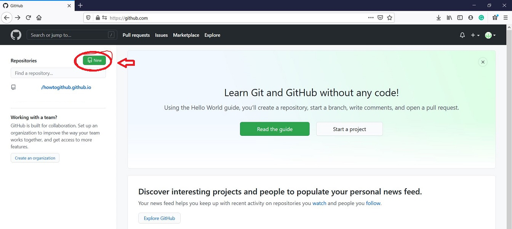
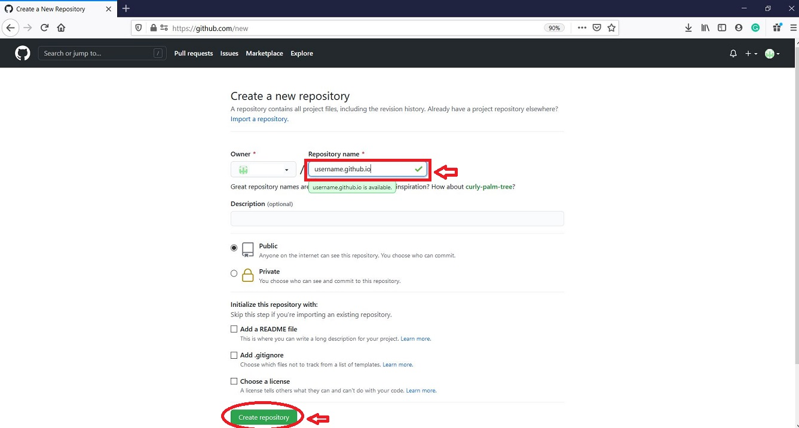
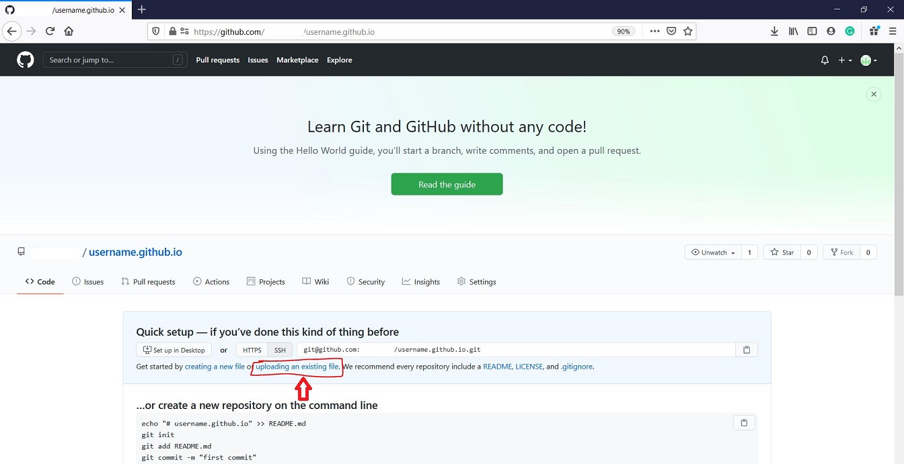
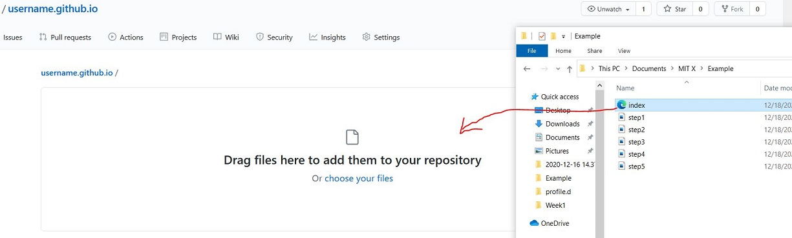

How to Create Your Own Web Page In GitHub
Step1
Go to Github.com and open a new account at https://www.github.com/.
Step2
After you log in to your account, click on "NEW" to create a new repository.

Step3
Enter a repository name, using your username type "username.github.io".
Then click Create repository.

Step4
Great Job!
Now that you have created your account and repository.
Click on "Uploading an existing file".

Step5
Create an index.html file on your PC in this file type.
<html>
<h1>"Your Name"</h1>
</html>
Open your file where you saved the 'index.html' file. Drag and drop files from your PC to the webpage.

Step6
Open a web browser and type https://www.username.github.io .
All done!